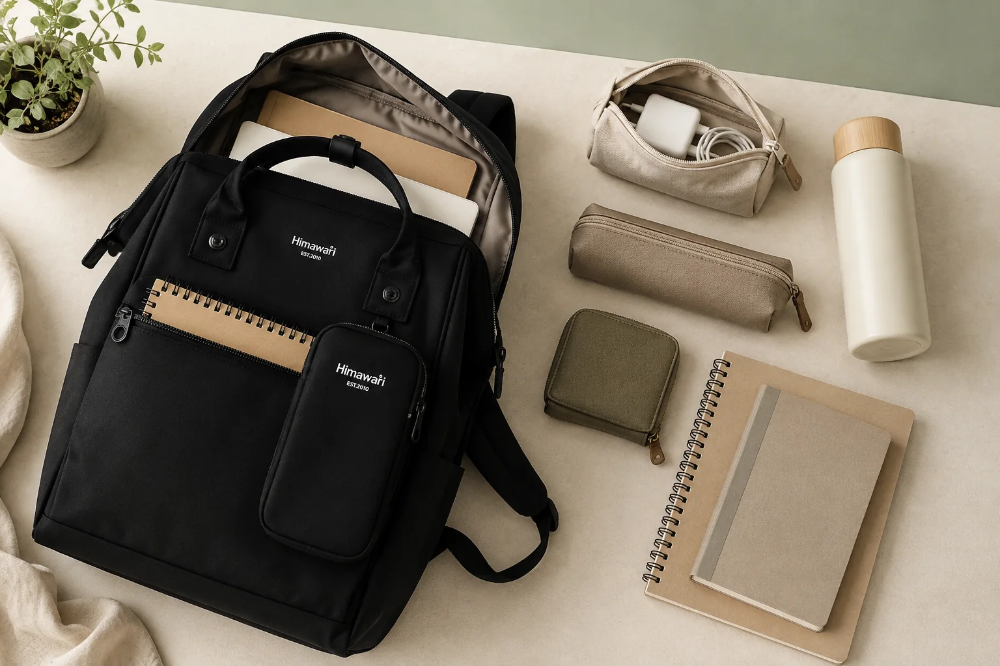

수납칸을 고를 때에는 꺼낼 장면을 적는다

제품 정보에서 수납공간이 많다는 말을 읽으면 정리가 쉬울 것처럼 느껴질 수 있습니다. 실제로는 자기 물건과 크기가 맞지 않는 칸이 비어 남고, 작은 소품이 여러 곳에 흩어질 수도 있습니다. 어떤 포켓이 좋은지 정하기 전에 하루 동안 무엇을 꺼내는지 적어봅니다. 가방을 채우는 목록에 사용 장면을 붙이면 필요한 공간의 역할이 분명해집니다.
물건 하나가 맡는 역할은 겹칠 수 있다
평소 소지품을 꺼내 큰 물건과 자주 쓰는 물건, 눌림을 피할 물건, 다른 짐과 나누어 둘 물건을 봅니다. 하나의 물건이 두 역할을 가질 수 있습니다. 기기는 크기도 중요하고 단단한 소품과 닿는 위치도 중요합니다. 물병은 실제 크기와 주변 자료의 구분을 함께 봐야 합니다. 항목을 각각 다른 포켓에 넣는 정답표보다 어떤 조건을 함께 만족해야 하는지 읽는 목록으로 씁니다.
가장 큰 소지품은 실제 크기와 보호재를 포함한 상태로 준비합니다. 가방 바깥 크기와 같은 공간이 내부에 있다고 판단하지 않고 입구와 사용할 칸의 정보를 확인합니다. 들어가는지에 이어 자연스럽게 닫을 수 있는지도 봅니다. 파일이나 책은 모서리가 여밈에 닿는지, 다른 물건을 넣을 때 위치가 달라지는지 살펴볼 수 있습니다. 큰 물건의 자리부터 정하면 남는 공간에 어떤 역할을 둘지 생각하기 쉽습니다.
한 칸과 나뉜 칸은 현재 짐으로
큰 칸 하나를 주로 쓰는 구성이라면 파우치와 보관재로 물건을 나눌 계획을 세울 수 있습니다. 내부가 여러 구역으로 나뉜 후보라면 각 칸의 입구와 실제 공간을 봅니다. 칸이 나뉘었다고 자기 물건이 모두 적합한 자리로 들어가는 것은 아닙니다. 어느 구조든 가장 큰 물건과 함께 사용할 묶음으로 비교합니다. 한 칸이 더 좋거나 여러 칸이 더 좋다는 결론을 먼저 둘 필요는 없습니다.
칸을 나누면 다른 물건을 넣는 위치도 달라질 수 있습니다. 한쪽에 넣은 파우치가 다른 칸을 밀어 공간이 달라지는지 실제 짐을 함께 준비해 봅니다. 빈 가방의 정돈된 사진만으로 사용 중의 모양을 정하지 않습니다. 자주 꺼낼 소품이 큰 물건을 움직이지 않고 접근할 수 있는지도 확인합니다. 칸의 이름과 개수보다 두 물건을 함께 넣었을 때의 동작이 선택에 직접 연결됩니다.
Himawari No.1027을 후보로 볼 때에도 자신의 짐 목록을 제품 정보의 실제 구조와 맞춥니다. 큰 자료를 넣을 자리, 이동 중 꺼낼 소품, 함께 쓸 파우치가 각각 어디에 있는지 읽습니다. 사진에서 보이지 않는 공간은 문의할 항목으로 남깁니다. 선택한 옵션과 실제로 확인한 칸을 기준으로 준비하면 제품 설명의 포켓 수를 자기 사용 순서로 바꿔볼 수 있습니다.

자주 쓰는 소품과 함께 쓰는 묶음
열쇠나 카드처럼 자주 꺼낼 물건은 사용 시점에서 접근할 수 있는 위치로 둡니다. 바깥 포켓을 생각한다면 깊이와 여밈, 이동 환경도 함께 봅니다. 물건이 밖으로 나오지 않고 정상적으로 닫을 수 있는지가 필요합니다. 모든 소품을 위쪽에 두는 방식보다 자기 동작을 집에서 확인하면 됩니다. 다른 물건을 찾으며 같이 움직이는 소품이 있으면 둘의 위치를 나누어볼 수 있습니다.
충전기와 선, 필기구처럼 함께 사용할 것은 파우치로 묶는 방법을 고를 수 있습니다. 고정 포켓 여러 곳에 나누어도 되는 구성이지만 가방을 자주 바꾼다면 같은 묶음이 이동하기 편할 수 있습니다. 파우치의 이름과 겉에서 알아볼 단서를 함께 정합니다. 모든 칸을 활용하려고 하나의 사용 묶음을 임의로 흩어 놓지 않고 실제로 어떤 구성으로 꺼내는지 기준을 둡니다.
물병과 음식, 화장품 같은 물건은 각각의 용기와 운반 안내를 확인합니다. 별도 파우치에 넣었다는 사실만으로 새지 않거나 다른 짐을 완전히 보호한다고 판단하지 않습니다. 실제 용기가 닫힌 상태에서 어디에 놓이는지와 종이·기기 사이의 구분을 봅니다. 우산이나 사용한 천처럼 상태가 바뀌는 소품은 돌아오는 묶음까지 생각합니다. 그날 빈자리가 어떤 역할을 맡을지도 정할 수 있습니다.
비교는 평소 구성으로 여닫는 데까지
후보를 실제로 확인할 수 있다면 안내에 맞는 사용 범위에서 평소 짐과 비슷한 구성을 봅니다. 여밈이 당겨지는 부분과 안쪽에서 서로 밀리는 물건을 살펴봅니다. 한 물건을 꺼낸 뒤 나머지 위치가 어떻게 바뀌는지도 볼 수 있습니다. 개수가 많은 포켓이 반드시 유리하다는 판단 대신 자신의 사용 묶음이 유지되는지 확인합니다. 사용할 구조가 바뀌면 자주 꺼낼 위치도 다시 정합니다.
가상의 비교로 같은 파일과 충전 파우치를 두 후보에 준비한다고 생각해 봅니다. 한 후보에서는 파일을 꺼낼 때 파우치도 함께 옮겨야 하고, 다른 후보에서는 따로 꺼낼 수 있을 수 있습니다. 어느 것이 적합한지는 그날 파일을 얼마나 자주 쓰는지와 다른 물건의 조건까지 봐야 합니다. 이 예시는 특정 모델의 실제 수납 결과가 아닙니다. 물건의 이름에 꺼낼 장면을 붙이는 방법을 설명합니다.
평소 넣지 않는 물건으로 빈칸을 채워 비교할 필요는 없습니다. 자주 비는 포켓이 있다면 현재 짐에 꼭 필요한 구조인지 생각할 수 있습니다. 사용하지 않는 칸이 있다는 이유만으로 나쁜 후보라고 결론 내리지 않고 필요한 물건을 정상적으로 담고 꺼낼 수 있는지 봅니다. 불편했던 동작이 있다면 그 지점에서 어떤 물건을 함께 움직였는지 메모합니다. 구조를 바꾸거나 배치를 조정할 근거가 됩니다.
선택 전에 남은 질문을 줄여 읽습니다. 큰 물건의 입구와 내부 공간, 소품의 접근, 용기의 분리, 여밈 상태 가운데 아직 모르는 항목을 정합니다. 제품 정보와 문의로 확인한 답은 해당 옵션과 연결해둡니다. 가방을 사용한 뒤에도 물건이 정한 역할의 자리로 돌아오는지 볼 수 있습니다. 꺼낼 장면이 남아 있는 짐 목록은 첫 수납과 이후의 정리를 같은 기준으로 이어줍니다.